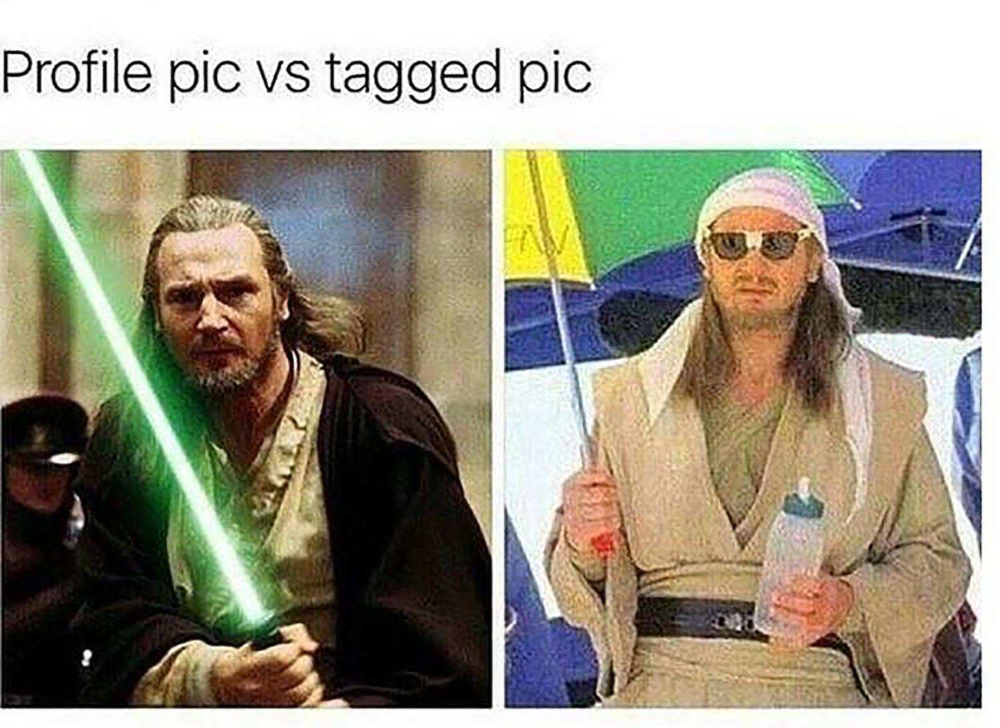

index
DMF board
Welcome to Joshua Laureles Home Page
Welcome to the djedi meme industrial complex.
I created this page for Djedi Level memes.
we will be using HTML, CSS, and javascript web development for spicy memes bordering on the grey Djedi
